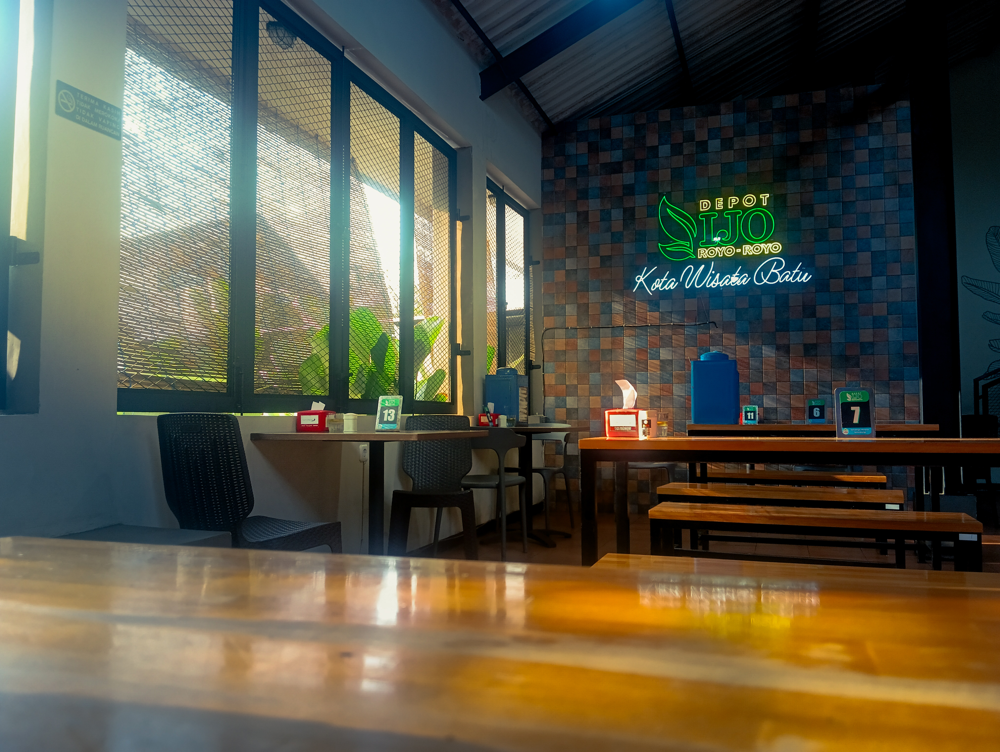
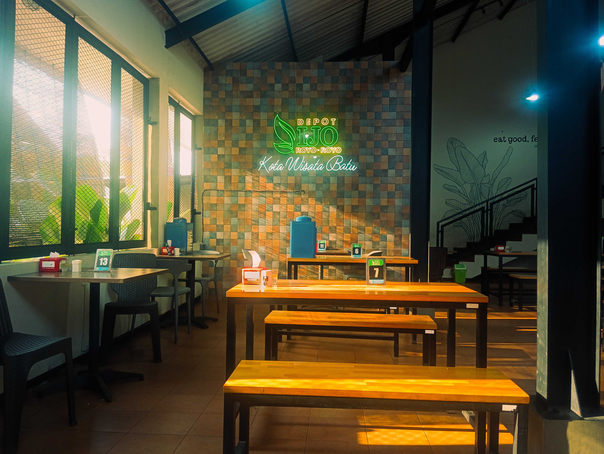
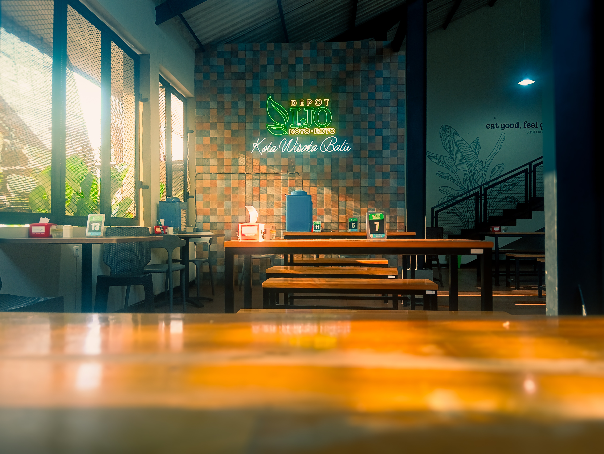
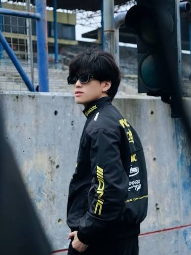

0+
Frames in the Gallery
Selected moments, carefully collected.
PHOTOGRAPHY & VISUAL STORIES
Moments, places, and stories seen through my lens.
Explore my work ↓A collection of moments.




BEHIND THE LENSA LITTLE ABOUT ME
Hi, I'm Lion — an aspiring photographer who loves capturing light, shadows, and the little details people often overlook.
Through my lens, I explore the beauty of everyday life, one frame at a time.
06 / THE JOURNEY
A small collection of moments, perspectives, and stories seen through my lens.
0+
Selected moments, carefully collected.
0
Nature, street, and sky.
0
One perspective behind the lens.
∞
The journey is only beginning.
HAVE A PROJECT IN MIND?